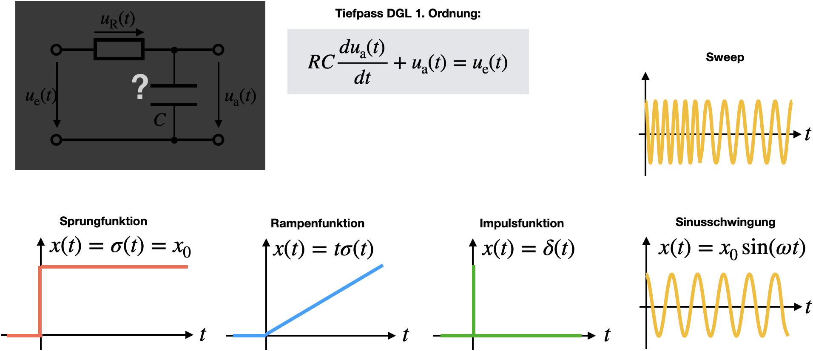
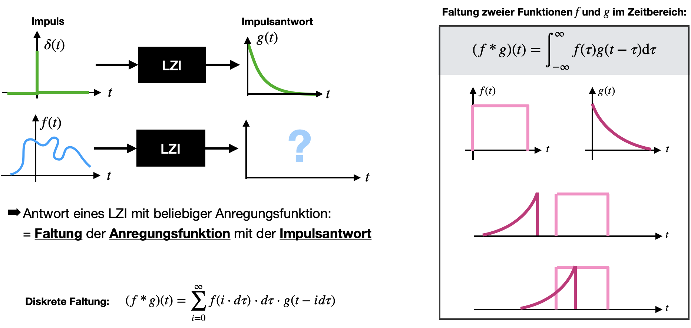

Impuls- und Sprungantwort
Contents
Impuls- und Sprungantwort#
Bei dem Prinzip der black box kenne ich das Innenleben meines Messsystems nicht, und ich kann lediglich mittels Messungen darauf zurück schließen. Je nachdem, welches Signal an den Eingang angelegt wird, erhalte ich ein andere Ausgangssignal. Dies ist in den beiden Bildern aus dem vorausgegangenen Kapitel deutlich zu erkenne. In einem Fall wurde ein Sprung angelegt, im anderen Fall ein Impuls.
In der Messtechnik ist es hingegen häufig viel aussagekräftiger das Übertragungsverhalten einer Messeinrichtung mittels Testfunktionen zu überprüfen. Sprung und Impuls gehören zu des Testfunktionen, doch auch eine Rampenfunktion (ein sich kontinuierlich erhöhendes Eingangssignal) oder ein Sweep (hier werden verschiedene Frequenzen direkt nacheinander durchgefahren) haben sich bewährt.

Das Vorgehen ist wiefolgt: Es wird eine Testfunktion angelegt und gemessen. Der Ausgang des Systems wird abgegriffen und ebenfalls gemessen. Ein Vergleich aus angelegtem Eingangssignal und gemessener Systemantwort (Ausgangssignal) können Rückschlüsse für das System getroffen werden.
Interpretation der Sprungantwort#
An dieser Stelle wollen wir uns ansehen, was man aus der Sprungantwort eines Tiefpasses 1. Ordnung im Labor ablesen kann.
Geplottet im nachfolgenden Bild ist die normalisierte Sprungantwort, d.h. das Ausgangssignal wurde durch \(u_0\) dividiert. Nach langer Einpendelzeit folgt der Ausgang dem Eingangssignal.
\(\tau\) ist die Zeitkonstante, die die Trägheit eines Systems bestimmt.
Aus der Theorie ist bekannt (siehe vorheriges Kapitel): \(\tau = RC\)
Nach der Zeit \(\tau\) ist das Ausgangssignal auf 63% seines maximal möglichen Wertes angestiegen. Es ist noch kein stationärer Zustand erreicht.
Einstellzeit \(t_e\): Dies ist das 95%-Kriterium:
Für ein System 1. Ordnung muss die Sprungantwort \(h(t)\) nach der Zeit \(t = 3\tau\) 95% des Endwertes erreicht haben.
Nur wenn dies der Fall ist, handelt es sich um ein System mit Ausgleich 1. Ordnung
Für ein System 2. Ordnung ist häufig ein Überschwingungen oder Einpendeln zubeoachten. Dann ist \(t_e\) Zeit vom Anlegen der Sprungfunktion bis zum Erreichen des Toleranzbandes innerhalb von 0,95 und 1,05.
Anstiegszeit \(t_r\): Dies ist die Dauer für einen Signalanstieg von 10% auf 90% am Ausgang des Systems.

Impulsantwort und Faltung im Zeitraum#
In diesem Abschnitt wollen wir uns der Genialität der Impulsantwort in Kombination mit der Faltung widmen. Hierfür müssen wir uns zuerst angucken, was Faltung überhaupt bedeutet.
Die Faltung ist eine mathematische Operation, welche zwischen zwei Funktionen \(f\) und \(g\) ausgeführt werden kann. Die Kurzschreibweise ist das Sternchen zwischen den beiden Funktionen. Allgemein berechnet wird sie über ein Integral, welches die beiden Funktionen beinhaltet, wobei \(g\) hierbei zeitlich gespiegelt und verschoben wird.
Die resultierende „Überlagerung“ zwischen \(f\) und gespiegelten und verschobenen Versionen von \(g\) (man spricht auch von einer „Verschmierung“ von \(f\)) kann z. B. verwendet werden, um einen gleitenden Durchschnitt zu bilden. Das Faltungsintegral kann in drei Schritten verstanden werden:
der Eingang \(g\) wird in der Zeit umgekehrt and zeitverschoben
Dieses umgekehrte und verschobene \(g\) wird nun an \(f\) multipliziert
Und dann wird das Produkt über alle Zeiten summiert (Integralbildung).
Für viele Funktionen wurde das Faltungsintegral bereits bestimmt, da es sehr aufwendig ist, dieses i.Allg. zu lösen. Das Integral zu lösen hilft außerdem kaum dabei genau zu verstehen, was das Integral, bzw. die Faltung, an sich überhaupt bedeutet. Die Faltung kann auch grafisch bestimmt werden, was wir uns in einer Übung einmal genauer ansehen werden.
Das interessante der Faltung ist jedoch, dass wir durch diese mathematische Operation das Systemverhalten oder Ausgangssignale vorhersagen können, solange die Impulsantwort bekannt ist. Man kann sich das vereinfacht so vorstellen, dass eine beliebige Eingangsfunktion \(f(t)\) durch undendliche viele Impulse beschrieben werden, mit infinitesimal kleiner Breite \(dt\). Die Impulsantwort ist für einen Impuls (Delta-Peak) bekannt: sie ist die zeitverschobene Antwort \(g(t-dt)\). Die Überlagerung vieler einzelner Impulse, eine beliebige Eingangsfunktion \(f(t)\) zu modellieren, ist einfach die Aussummerierung aller Impulse. In einem LZI System ist die Impulsantwort ebenfalls die Aufsummerierung der Impulsantworten zu den zugehörigen Impulsen (Linearitätsbedingung). Um den realen Werteverlauf der Eingangsfunktion sicher zu stellen, muss jeder Delta-Peak für jedes Zeitintervall mit dem Funktionswert skaliert werden. Die Homogenitätsbedingung stellt jetzt sicher, dass wir den Ausgang auch entsprechend skalieren dürfen. Mathematisch betrachtet resultiert dies direkt darin, dass wir Antworten von beliebigen Anregungsfunktionen hervorsagen können, indem die Anregungsfunktion \(f(t)\) mit der Impulsantwort gefaltet wird.

Die Faltung ist nicht zu verwechseln mit der Kross-Korrelation von zwei Messsignalen. Obwohl die Integrale sehr ähnlich aussehen, so besteht ein signifikanter Unterschied zwischen diesen beiden Methoden, der sich im Minuszeichen der Verzögerung aufzeigt. Grafisch bedeutet dies, dass das zu faltende Signal im Falle der Kreuz-Korrelation nicht gespiegelt wird, wohingegen es bei der grafischen Faltung zeitlich gespiegelt werden muss. Die Faltung berechnet man in der Regel, wenn man die Antwort eines Messsystems berechnen möchte. $\((f \ast g)(t) = \int_{-\infty}^{\infty} f(\tau)g(t-\tau) \mathrm{d}\tau\)\( Die *Kreuz-Korrelation* berechnet man um zu untersuchen, ob Rauschanteile von Signal \)f\( auch in Signal \)g\( vorkommen (Stichwort ist hier der *Korrelationsbegriff*, welcher häufig auf zwei *Signale* und nicht Messsysteme angewendet wird). \)\((f \star g)(t) = \int_{-\infty}^{\infty} f(\tau)g(t+\tau) \mathrm{d}\tau\)\( Die *Auto-Korrelation* soll hier der vollständigkeitshalber noch einmal als Spezialfall der Kreuz-Korrelation aufgeführt werden. Hier berechnet man, wie ähnlich ein zeit-verschobenes Signal zu sich selbst ist (*zeitliche Korrelation*). \)\((g \star g)(t) = \int_{-\infty}^{\infty} g(\tau)g(t+\tau) \mathrm{d}\tau\)$

Interpretation im Frequenzraum#
Als nächstes gucken wir uns dynamische Messsysteme im Frequenraum an. Aus den letzten Vorlesungen sollte bekannt sein, dass periodische Zeitserien in Fourierreihen umgeschrieben werden können. Nicht-periodische Funktionen können mittels Fourier-Transformation in den Frequenzraum transformiert werden. In beiden Fällen erhält man Auskunft darüber, welche Frequenzanteile in dem Signal vorhanden sind. Die Frequenzanteile weisen eine Amplitude und eine Phase auf und können auch in einem Phasordiagram oder Amplitudendiagram eingezeichnet werden.
Nicht nur Signale, sondern natürlich auch das Messsystem selber, kann in den Frequenz- oder eher den Laplace-Raum, transformiert werden. Wie sich das Messsystem im Frequenzraum verhält, wird über die sogenannte Übertragungsfunktion definiert. Die Übertragungsfunktion eines Systems ist das Verhältnis von Ausgangs- zu Eingangssinal. Das Eingangssignal kann mittels Fourier- oder Laplace-Transformation transformiert werden. Zur Erinnerung schreiben wir hier noch mal die Integrale, die für die Umrechnung benutzt werden:
Fourier-Transformation: \(\mathcal F(x(t)) = X(j\omega) = \int_{-\infty}^{\infty} x(t) \mathrm e^{-j \omega t} dt\)
Laplace-Transformaton: \(\mathcal L(x(t)) = X(s) = \int_{0}^{\infty} x(t) \mathrm e^{-st} dt\)
Wenn \(x(t)\) das Eingangssignal im Zeit-Raum ist, dann bezeichnen wir mit \(X(j \omega)\) das Eingangssignal im Frequenzraum. Hier ist \(j\) wieder die komplexe Zahl. Das Ausgangssignal \(y(t)\) wird analog dazu mit \(Y(j \omega)\) bezeichnet. Es hat sich eingebürgert, dass Zeitsignale mit kleinen Buchstaben, \(x\), bezeichnet werden und Signale im Frequenzbereich mit großen Buchstaben, \(X\).
Die Übertragungsfunktion, \(G(j \omega)\), kann also wiefolgt ausgedrückt werden: